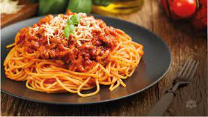

spaghetti

Very nice spaghetti
Ingredients
1 small green bell pepper, diced
1 (28 ounce) can diced tomatoes/ul>
1 (16 ounce) can tomato sauce
1 (6 ounce) can tomato paste
Steps
1.Gather all ingredients..
2.Combine ground beef, onion, garlic, and green pepper in a large saucepan over medium-high heat. Cook and stir until meat is browned and crumbly and vegetables are tender, 5 to 7 minutes. Drain grease.
3.Stir diced tomatoes, tomato sauce, and tomato paste into the pan. Season with oregano, basil, salt, and pepper. Simmer spaghetti sauce for 1 hour, stirring occasionally.
4.Serve hot and enjoy!